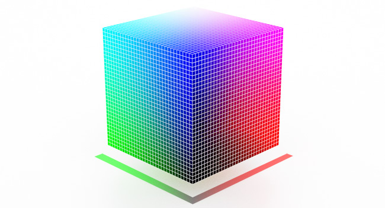

赤橙黄绿青蓝紫，谁持彩练当空舞？
颜色或色彩是通过眼、脑和我们的生活经验所产生的一种对光的视觉效应。
色彩定义
本文开头那句是维基百科对色彩的定义，直白来说就是：光给人的感觉。具体分为三个部分：
- 光的属性：波粒二象性；
- 眼的成像：视网膜生理特性；
- 人的感觉：主观经验性。
光的属性决定了色彩的物理特性，眼的成像决定了色彩的生理特性，人的感觉反映了色彩的心理特性。
光的属性
目前科学界得出的结论是：光具有波动性，也具有粒子性。可见光是由光的波动性决定，人眼可以感受到的波长范围一般是落在390到700nm，具体每个颜色对应的光频率和波长如下：
| 颜色 | 频率 | 波长 |
|---|---|---|
| 紫色 | 668–789THz | 380–450nm |
| 蓝色 | 631–668THz | 450–475nm |
| 青色 | 606–630THz | 476–495nm |
| 绿色 | 526–606THz | 495–570nm |
| 黄色 | 508–526THz | 570–590nm |
| 橙色 | 484–508THz | 590–620nm |
| 红色 | 400–484THz | 620–750nm |
可见光光谱在电磁谱中仅仅占据370nm的宽度，可见光光谱在电磁谱中的位置如下：
到此，可以进一步的解决几个关键问题：
1、光谱中只有七种颜色，何来白色、黑色、灰色？
要回答这个问题，就要理解单色和混色。只包含一个波长的光源，被称为单色光源，然而大多数光源的光谱不是单色的，它们的光是由不同强度和波长的光混合组成的。可以将光谱中三原色的光：红色、蓝色和绿色按一定比例混合得到白光。光谱中所有可见光的混合也是白光。黑色、灰色也类似。
2、为什么有些物体是白色的，有些物体是黑色的？
这是由于该物体的物理特性决定的，一个反射所有波长的光的表面是白色的，而一个吸收所有波长的光的表面是黑色的，一个反射光色所处波长的表示是蓝色的。
眼的成像
眼的成像由视网膜的生理特性决定，对视网膜有兴趣的可以参考维基百科Retina。这里仅仅给出一个从相同色彩得出不同成像的例子。如下图：
任意使用一个取色软件，你会发现A和B方格同为RGB(787878)。视网膜无法真实的反映光的原始特性。
人的感觉
如果此时你Google以下“色彩 感觉”，你会发现大多都是色彩对人的感觉的影响。但事实上人处于不同的心理时期，对同样的色彩会得到不同的体验。譬如，心情愉悦时，我们会觉得某个色情比较明亮，然而同样的色彩在我们不开心时，却显得十分昏暗。这是因为经过视网膜成像后的色彩，仍然需要经过大脑的处理。而对于颜色，大脑的主观心理特性远胜于客观事实特性。这也导致了所谓的色彩心理学。
色彩属性
不论任何色彩，都具有三个基本的性质，一般称为色彩三要素或色彩三属性：色相（Hue）、彩度（Chroma）、明度（Value）。
色相
色相（Hue），又被称为色调，是用来区分色彩的首要特征，即依据不同波长的光来界定色彩的名字，如红、橙、黄、绿、蓝、紫。当我们描述色彩时，最常用色相来沟通，产生共鸣。改变色相比同等程度改变饱和度或亮度感受到的色彩变化要更大，所以被称为颜色最重要的特征。
色相的确切定义为颜色等效光谱峰值的位置。
彩度
彩度（Chroma），又被称为饱和度（Saturation）、色彩浓度，用来表示色彩的纯粹度或饱和度。彩度的高低，是以色彩中某种纯色的比例来分辨比较的，所以某一色彩加入到其他色彩时，彩度就会降低。要比较不同色彩间的彩度时，必须以指定某种纯色当依据才能比较。
彩度确切的定义是颜色等效光谱分布集中于波峰（色相）的程度，越集中其含颜色越少，饱和度越高。
明度
明度（Value），英文中又称为Brightness、Lightness、Luma，用来表示色彩明暗的程度。比如，纯黄色比纯绿色来得明亮，纯黄色是明亮度高的色彩，而纯绿色是明亮度略低的色彩。
可以在同一色相色彩，以加入白色来提高明度；加入黑色来降低明度的方式，产生一系列的色彩变化，如浅红、淡红、亮红、暗红，即使红色不同的明度变化。
明度的确切定义是颜色等效光谱各色相心理强度之和。
色彩体系
色彩体系就是按人的视觉特点，使用规定的标号系统，把色彩按一定规则排列。这里我们仅仅分析色彩模型和色貌模型。
色彩模型
色彩模型是描述使用一组值（通常使用三个、四个值或者颜色成分）表示颜色方法的抽象数学模型。例如三原色光模式（RGB） 和印刷四分色模式（CMYK） 都是色彩模型。色彩空间是色彩模型通过具体的映射函数的特定实现。
常用的色彩模型包含RGB、CMYK、HVS、HSL、YUV、YCbCr、YIQ等。RGB、CMYK是利用原色相混的比例表示的色彩模型；HVS、HSL、YUV、YCbCr、YIQ利用不同的概念表示的色彩模型。YUV、YCbCr、YIQ电视常用色彩模型，目前的大多数WebCam的输出图像也使用这种色彩模型。
1、RGB
RGB色彩模型包含三个分量：R（红）、G（绿）、B（蓝），是根据三原色制定的立方体直角坐标系色彩模型，是最常用的色彩模型。
2、CMYK
CMYK色彩模型包含四个分量：C（青）、M（洋红）、Y（黄）、K（黑），是根据反射光的减色原理制度的模型，主要用于印刷行业。

3、YUV、YCbCr、YIQ
YUV 是一种目的为把颜色的视觉亮度分离来建立的色彩空间，Y (Luminance) 代表颜色的视觉亮度，U、V 则是剩余的色彩分量。视觉亮度代表的是颜色在人实际感受的亮度，之所以不同是因为不同色相的颜色的视觉亮度是不同的，比如纯绿色和纯蓝色在人眼中纯绿色明显要亮很多。一般的 YUV 模型中红绿蓝的视觉亮度比是：0.299:0.587:0.114。
YCbCr 通常被当做 YUV 的另一种形式，相比 YUV， Cb 和 Cr 通道分别更向红、蓝偏移，而且通常进行压缩。YCbCr 常用在图像压缩领域，JPEG 图片内部的色彩空间就使用 YCbCr 模型。
YIQ 是另一种视觉亮度拆分模型，与 YUV 很相似，是 NTSC 彩色电视的标准。
三者的差别见下图：
色貌模型
色彩模型反映的是客观的色彩表现，色貌模型反映的是经过人的主观心理感受后的色彩表现。所以一个色貌模型应该能描述和预测不同光照、不同背景、不同观察条件下物体的色貌（色相、饱和度、明度等）。有关色貌模型可以参见维基百科Color appearance model。
色彩空间
色彩模型和色彩空间必须要有一个映射函数，才能够在实际中使用。通过映射函数，我们给色彩模型确切的定义，进而得到了色彩空间，譬如：Adobe RGB、sRGB、CIE XYZ。映射函数生成颜色的某个完全子集——色域，色域与色彩模型一起定义一个新的色彩空间。
色域是对一种颜色进行编码的方法，也指一个技术系统能够产生的颜色的总和。色域越大表示该色彩空间能够显示的颜色更多。
基于RGB色彩模型的色彩空间
RGB色彩空间包含：Adobe RGB、sRGB、Apple RGB、ProPhoto RGB等，它们都是RGB色彩模式，经过特定的映射函数，生成的绝对RGB色彩空间。
下图反映的是不同RGB色彩空间色域的对比，Horseshoe Shape of Visible Color表示人眼可辩视色域：
- sRGB为了适应更多的设备，是常用色彩空间中色域最小的色彩空间；
- Adobe RGB的开发目的是为了尽可能在CMYK彩色印刷中利用计算机显示器等设备的RGB颜色模式上囊括更多的颜色，因此其色域较sRGB大很多，且完全包含sRGB色彩空间；
- ProPhoto RGB是为了摄像领域专门设计的，为满足摄像的需求，其拥有极大的色域，甚至包含眼不可辩视色域范围。

CIE 1931 XYZ色彩空间
CIE色彩空间的设计目的是构建一个可以描述和排列所有色彩的系统，采用数学方式来定义的色彩空间。CIE色彩空间利用视觉的三色刺激值的匹配实验得到色彩空间。更精确地说，首先先定义三种主要颜色（primary color），再利用颜色叠加模型，即可叙述各种颜色。在三色加色法模型中，如果某一种颜色和另一种混合了不同分量的三种原色的颜色，均使人类看上去是相同的话，我们把这三种原色的分量称作该颜色的三色刺激值。
CIE 1931 RGB色彩空间是基于RGB色彩模型的色彩空间，其使用RGB三原色作为三种主要颜色，然而使用实现中的三种颜色匹配出所有颜色，会导致CIE 1931 RGB 色彩空间里颜色的值出现了负数。因此在此基础上，CIE组织有提出了CIE 1931 XYZ色彩空间。
CIE 1931 XYZ色彩空间定义三种现实中不存在的理想颜色作为三原色，通过数学变换将负的颜色分辨变为正的。具体的变化公式可以参考维基百科中描述。
CIE 1931 XYZ色彩空间是特殊的，因为它是基于人类颜色视觉的直接测定，并充当很多其他色彩空间的定义基础。
基于YUV色彩模型的色彩空间
YUV色彩空间主要用来表示电视信号。
在现代彩色电视系统中，通常采用三管彩色摄像机或彩色CCD(点耦合器件)摄像机，它把摄得的彩色图像信号，经分色、分别放大校正得到RGB，再经过矩阵变换电路得到亮度信号Y和两个色差信号R－Y、B－Y， 最后发送端将亮度和色差三个信号分别进行编码，用同一信道发送出去。这就是我们常用的YUV色彩空间。
采用YUV色彩空间的重要性是它的亮度信号Y和色度信号U、V是分离的。如果只有Y信号分量而没有U、V分量， 那么这样表示的图就是黑白灰度图。
色彩量化
sRGB和Adobe RGB色彩空间都可以根据CIE 1931 XYZ色彩空间为基准来计算。对于CIE 1931 XYZ色彩空间中的某个颜色[1, 1, 1]，如下图：
其对应的各个色彩空间分量值如下：
| 色彩空间 | 分量1 | 分量2 | 分量3 | 分量4 |
|---|---|---|---|---|
| sRGB | 28.6 | 24.6 | 23.9 | |
| Adobe RGB | 33.2 | 30.7 | 30.1 | |
| CMY | 88.6% | 90.2% | 90.6% | |
| CMYK | 0% | 13.8% | 17.2% | 88.6% |
| Lab | 8.99 | 1.84 | 1.21 | |
| LCH | 8.99 | 2.2 | 33.23° |
对于sRGB和Adobe RGB计算出来的分量实际是[0,1]区间的值，一个分量采用8位量化精度，也就是将计算出来的值乘以255然后取整，就得到我们通常所见的RGB[0~255, 0~255, 0~255]表示的色彩值。
通过上表的比较，我们会发现sRGB和Adobe RGB相同的RGB分量值表示的颜色其实是不同的。这是一个困惑我很久的问题——虽然sRGB和Adobe RGB都可以使用RGB24来表示，但同样的值表示的颜色并不相同，也就是Adobe RGB能够使用RGB24 16777216个精度值表示更多的颜色，而sRGB值能表示更少的颜色。
有关RGB和YUV相关的知识，请参考视频像素格式一文。